Capítulo 2 Análisis Exploratorio de Datos (EDA)
Primeramente, realizaremos un análisis exploratorio de los datos para comprender la estructura, distribución y relaciones presentes en el conjunto de rendimiento estudiantil.
Librerías
if (.Platform$OS.type == "windows") {
invisible(Sys.setlocale("LC_CTYPE", "Spanish_Colombia.utf8"))
}
library(tidyverse)
library(Amelia)
library(moments)
library(ggplot2)
library(patchwork)
library(GGally)
library(readr)
library(dplyr)
library(car)
library(rstatix)
library(coin)
library(nortest)
library(knitr)
library(kableExtra)
options(knitr.table.format = "html")
library(broom)etiq_hist <- function(bins = NULL, binwidth = NULL, boundary = NULL, size = 2.6) {
list(
geom_text(stat = "bin", bins = bins, binwidth = binwidth, boundary = boundary,
aes(y = after_stat(count),
label = ifelse(after_stat(count) == 0, "",
scales::comma(after_stat(count)))),
angle = 90, hjust = -0.15, vjust = 0.5, size = size),
scale_y_continuous(labels = scales::comma, expand = expansion(mult = c(0, 0.16)))
)
}
etiq_barras <- function(size = 3.2) {
list(
geom_text(stat = "count",
aes(label = scales::comma(after_stat(count))),
vjust = -0.4, size = size),
scale_y_continuous(labels = scales::comma, expand = expansion(mult = c(0, 0.12)))
)
}
etiq_box <- function(size = 2.8) {
q <- function(p) function(y) unname(quantile(y, p))
etiqueta <- function(f) {
stat_summary(fun = f, geom = "text",
aes(label = format(round(after_stat(y), 1), big.mark = ",",
trim = TRUE, drop0trailing = TRUE)),
position = position_nudge(x = 0.4), hjust = 0, size = size)
}
list(etiqueta(q(0.25)), etiqueta(median), etiqueta(q(0.75)))
}Importemos el dataframe
Ver las primeras 5 filas
head(df, n = 5) %>%
kable(caption = "Primeras 5 filas del dataset", align = "c") %>%
kable_styling(bootstrap_options = c("striped", "hover", "condensed"),
full_width = FALSE, position = "center") %>%
row_spec(0, bold = TRUE) %>%
scroll_box(width = "100%")| Hours Studied | Previous Scores | Extracurricular Activities | Sleep Hours | Sample Question Papers Practiced | Performance Index |
|---|---|---|---|---|---|
| 7 | 99 | Yes | 9 | 1 | 91 |
| 4 | 82 | No | 4 | 2 | 65 |
| 8 | 51 | Yes | 7 | 2 | 45 |
| 5 | 52 | Yes | 5 | 2 | 36 |
| 7 | 75 | No | 8 | 5 | 66 |
Ver la estructura de los datos
tibble(
Variable = names(df),
Tipo = sapply(df, function(x) class(x)[1]),
`Primeros valores` = sapply(df, function(x) paste(head(as.character(x), 5), collapse = ", "))
) %>%
kable(caption = paste0("Estructura del dataset: ", format(nrow(df), big.mark = ","),
" observaciones y ", ncol(df), " variables"),
align = "lcl") %>%
kable_styling(bootstrap_options = c("striped", "hover", "condensed"),
full_width = FALSE, position = "center") %>%
row_spec(0, bold = TRUE)| Variable | Tipo | Primeros valores |
|---|---|---|
| Hours Studied | integer | 7, 4, 8, 5, 7 |
| Previous Scores | integer | 99, 82, 51, 52, 75 |
| Extracurricular Activities | character | Yes, No, Yes, Yes, No |
| Sleep Hours | integer | 9, 4, 7, 5, 8 |
| Sample Question Papers Practiced | integer | 1, 2, 2, 2, 5 |
| Performance Index | numeric | 91, 65, 45, 36, 66 |
2.1 Clasificación de las variables
Con base en la estructura anterior, las variables del dataset se clasifican según su naturaleza. Todas las variables disponibles aportan información relevante sobre los hábitos de estudio o el desempeño académico del estudiante, por lo que no se excluye ninguna columna.
categoricas <- tibble(
Variable = c("Extracurricular Activities"),
Subtipo = c("Nominal (dicotómica)"),
Categorías = c("No, Yes")
)
categoricas %>%
kable(caption = "Variables categóricas (1)", align = "lcl") %>%
kable_styling(bootstrap_options = c("striped", "hover", "condensed"),
full_width = FALSE, position = "center") %>%
row_spec(0, bold = TRUE)| Variable | Subtipo | Categorías |
|---|---|---|
| Extracurricular Activities | Nominal (dicotómica) | No, Yes |
numericas <- tibble(
Variable = c("Hours Studied", "Previous Scores", "Sleep Hours",
"Sample Question Papers Practiced", "Performance Index"),
Subtipo = c("Discreta (entera)", "Continua / entera",
"Discreta (entera)", "Discreta (conteo)", "Continua"),
Rol = c(rep("Predictora", 4), "Respuesta")
)
numericas %>%
kable(caption = "Variables numéricas (5)", align = "lcc") %>%
kable_styling(bootstrap_options = c("striped", "hover", "condensed"),
full_width = FALSE, position = "center") %>%
row_spec(0, bold = TRUE)| Variable | Subtipo | Rol |
|---|---|---|
| Hours Studied | Discreta (entera) | Predictora |
| Previous Scores | Continua / entera | Predictora |
| Sleep Hours | Discreta (entera) | Predictora |
| Sample Question Papers Practiced | Discreta (conteo) | Predictora |
| Performance Index | Continua | Respuesta |
En total, el dataset contiene 10,000 observaciones y 6 variables: 1 categórica y 5 numéricas (de las cuales Performance Index es la variable respuesta). Por lo tanto, se dispone de 5 variables predictoras: 1 categórica y 4 numéricas.
2.2 Revisión de datos faltantes en las variables
Veamos si existen valores faltantes en las variables del conjunto de datos.
df %>%
summarise(across(everything(), ~ sum(is.na(.)))) %>%
pivot_longer(everything(), names_to = "Variable", values_to = "Datos faltantes") %>%
mutate(`Porcentaje (%)` = round(`Datos faltantes` / nrow(df) * 100, 2)) %>%
kable(caption = "Datos faltantes por variable",
format.args = list(big.mark = ","), align = "lcc") %>%
kable_styling(bootstrap_options = c("striped", "hover", "condensed"),
full_width = FALSE, position = "center") %>%
row_spec(0, bold = TRUE)| Variable | Datos faltantes | Porcentaje (%) |
|---|---|---|
| Hours Studied | 0 | 0 |
| Previous Scores | 0 | 0 |
| Extracurricular Activities | 0 | 0 |
| Sleep Hours | 0 | 0 |
| Sample Question Papers Practiced | 0 | 0 |
| Performance Index | 0 | 0 |
El análisis de valores faltantes muestra que todas las variables —tanto las 5 numéricas (Hours Studied, Previous Scores, Sleep Hours, Sample Question Papers Practiced y Performance Index) como la categórica (Extracurricular Activities)— están completamente diligenciadas (0 datos faltantes, 0 %).
Verificamos de forma desagregada las variables numéricas y categóricas para dejar constancia de su integridad antes de transformar tipos de datos.
df %>%
select(where(is.numeric)) %>%
summarise(across(everything(), ~ sum(is.na(.)), .names = "NA_{.col}"))## NA_Hours Studied NA_Previous Scores NA_Sleep Hours
## 1 0 0 0
## NA_Sample Question Papers Practiced NA_Performance Index
## 1 0 0 df %>%
select(where(is.character)) %>%
summarise(across(everything(), ~ sum(is.na(.)), .names = "NA_{.col}"))## NA_Extracurricular Activities
## 1 0Al no registrarse ningún valor faltante en el dataset, no es necesario aplicar técnicas de imputación en esta etapa, conservando intactos los 10,000 registros originales.
2.3 Conversión de variables de tipo carácter a factor
El paso siguiente es convertir la variable de tipo carácter (character) a factor (factor), que es el tipo de dato que R utiliza para representar variables categóricas, facilitando las tablas de frecuencia, los gráficos y las pruebas estadísticas.
df <- df %>%
mutate(
`Extracurricular Activities` = factor(`Extracurricular Activities`,
levels = c("No", "Yes"))
)Se convirtió a factor la variable Extracurricular Activities con los niveles “No” y “Yes”. Todos los gráficos, tablas, estimaciones y pruebas de hipótesis se calculan con los 10,000 registros del conjunto de datos, sin submuestreo.
2.4 Análisis de la variable respuesta (Performance Index)
Antes de analizar las variables independientes, se caracteriza por completo la variable respuesta del estudio, Performance Index, ya que es la variable con la que se compararán todas las demás.
2.4.1 Resumen estadístico
df %>%
summarise(
n = n(),
media = mean(`Performance Index`),
sd = sd(`Performance Index`),
mediana = median(`Performance Index`),
RIC = IQR(`Performance Index`),
Q1 = quantile(`Performance Index`, 0.25),
Q3 = quantile(`Performance Index`, 0.75),
mínimo = min(`Performance Index`),
máximo = max(`Performance Index`),
asimetría = skewness(`Performance Index`),
curtosis = kurtosis(`Performance Index`)
) %>%
pivot_longer(everything(), names_to = "Estadístico", values_to = "Valor") %>%
kable(caption = "Resumen estadístico de Performance Index", digits = 2,
format.args = list(big.mark = ","), align = "lc") %>%
kable_styling(bootstrap_options = c("striped", "hover", "condensed"),
full_width = FALSE, position = "center") %>%
row_spec(0, bold = TRUE)| Estadístico | Valor |
|---|---|
| n | 10,000.00 |
| media | 55.22 |
| sd | 19.21 |
| mediana | 55.00 |
| RIC | 31.00 |
| Q1 | 40.00 |
| Q3 | 71.00 |
| mínimo | 10.00 |
| máximo | 100.00 |
| asimetría | 0.00 |
| curtosis | 2.14 |
El resumen muestra que Performance Index tiene una media de 55.22 y una mediana prácticamente idéntica de 55.00, con una asimetría cercana a cero (-0.00), lo que indica una distribución altamente simétrica alrededor del centro. Su desviación estándar es de 19.21 puntos y el rango intercuartílico es de 31.00 puntos (entre Q1 = 40.00 y Q3 = 71.00), abarcando valores desde un mínimo de 10.00 hasta un máximo de 100.00. La curtosis de 2.14 (menor que 3) sugiere una distribución platicúrtica, es decir, más aplanada en el centro y con colas más ligeras que una distribución normal.
2.4.2 Distribución
ggplot(df, aes(x = `Performance Index`)) +
geom_histogram(bins = 30, fill = "#AEC6CF", color = "white") + etiq_hist(bins = 30) +
labs(title = "Distribución de Performance Index", x = "Performance Index", y = "Frecuencia")
El histograma muestra que Performance Index presenta una distribución simétrica y acampanada, pero notablemente amplia y aplanada en su zona central (entre 35 y 75 puntos), donde la mayoría de los intervalos reúne entre 400 y 650 estudiantes. Hacia ambos extremos (por debajo de 25 y por encima de 85 puntos) la frecuencia desciende de manera simétrica y gradual hasta los límites de 10 y 100 puntos, sin colas largas ni sesgos pronunciados.
2.4.3 Valores atípicos
ggplot(df, aes(x = "", y = `Performance Index`)) +
geom_boxplot(fill = "#AEC6CF") + etiq_box() +
labs(title = "Boxplot de Performance Index", y = "Performance Index")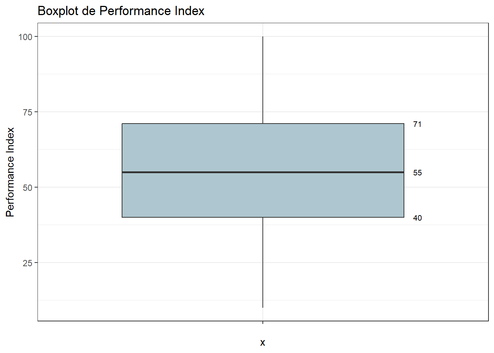
El boxplot de Performance Index confirma la simetría observada en el histograma y la ausencia total de valores atípicos. La caja, que contiene el 50 % central de los estudiantes, se extiende exactamente entre 40 y 71 puntos, con la mediana ubicada en 55. Los bigotes cubren todo el rango observado, desde 10 hasta 100 puntos, sin ningún punto fuera de ellos.
2.4.4 Conclusión sobre la variable respuesta
En conclusión, Performance Index es una variable continua, simétrica (media de 55.22 y mediana de 55.00), acotada entre 10 y 100 puntos, sin valores atípicos y con forma platicúrtica (curtosis de 2.14). Aunque su simetría es notable, su achatamiento central y el tamaño muestral de 10,000 registros hacen que se desvíe de una distribución normal teórica, lo que se verificará formalmente en el capítulo de inferencia estadística.
2.5 Resumen de las demás variables numéricas
Ahora se resumen las variables numéricas restantes, que constituyen las cuatro predictoras numéricas del estudio.
df %>%
select(where(is.numeric), -`Performance Index`) %>%
pivot_longer(cols = everything(), names_to = "variable", values_to = "valor") %>%
group_by(variable) %>%
summarise(
n = length(valor),
media = mean(valor),
sd = sd(valor),
mediana = median(valor),
RIC = IQR(valor),
Q1 = quantile(valor, 0.25),
Q3 = quantile(valor, 0.75),
mínimo = min(valor),
máximo = max(valor),
asimetría = skewness(valor),
curtosis = kurtosis(valor)
) %>%
kable(caption = "Resumen estadístico de las variables numéricas predictoras",
digits = 2, format.args = list(big.mark = ",")) %>%
kable_styling(bootstrap_options = c("striped", "hover", "condensed"),
full_width = FALSE, position = "center", font_size = 12) %>%
row_spec(0, bold = TRUE)| variable | n | media | sd | mediana | RIC | Q1 | Q3 | mínimo | máximo | asimetría | curtosis |
|---|---|---|---|---|---|---|---|---|---|---|---|
| Hours Studied | 10,000 | 4.99 | 2.59 | 5 | 4 | 3 | 7 | 1 | 9 | 0.00 | 1.77 |
| Previous Scores | 10,000 | 69.45 | 17.34 | 69 | 31 | 54 | 85 | 40 | 99 | 0.00 | 1.79 |
| Sample Question Papers Practiced | 10,000 | 4.58 | 2.87 | 5 | 5 | 2 | 7 | 0 | 9 | -0.04 | 1.79 |
| Sleep Hours | 10,000 | 6.53 | 1.70 | 7 | 3 | 5 | 8 | 4 | 9 | -0.04 | 1.74 |
La tabla presenta las medidas descriptivas de las cuatro predictoras numéricas. Todas muestran una simetría muy cercana a cero y una curtosis próxima a 1.75–1.79, valor característico de distribuciones uniformes discretas:
Hours Studied tiene una media de 4.99 horas y una mediana de 5.00, con valores enteros entre 1 y 9 horas.
Previous Scores registra una media de 69.45 puntos y una mediana de 69.00, con desviación estándar de 17.34 y rango de 40 a 99 puntos.
Sleep Hours presenta una media de 6.53 horas y una mediana de 7.00, abarcando de 4 a 9 horas diarias.
Sample Question Papers Practiced tiene una media de 4.58 cuestionarios y una mediana de 5.00, variando entre 0 y 9 cuestionarios practicados.
2.6 Análisis de las variables independientes (características)
Ahora analizaremos cada variable predictora de forma individual, comenzando por las cuatro variables numéricas y continuando con la variable categórica.
Variable Hours Studied:
ggplot(df, aes(x = `Hours Studied`)) +
geom_histogram(binwidth = 1, boundary = 0.5, fill = "#AEC6CF", color = "white") +
etiq_hist(binwidth = 1, boundary = 0.5) +
scale_x_continuous(breaks = 1:9) +
labs(title = "Distribución de Hours Studied", x = "Hours Studied", y = "Frecuencia")
La distribución de Hours Studied es prácticamente uniforme discreta entre 1 y 9 horas: cada valor entero reúne entre 1,085 y 1,152 estudiantes (alrededor del 11 % de la muestra por cada nivel), sin picos ni sesgos hacia ningún extremo.
ggplot(df, aes(x = "", y = `Hours Studied`)) +
geom_boxplot(fill = "#AEC6CF") + etiq_box() +
labs(title = "Boxplot de Hours Studied", y = "Hours Studied")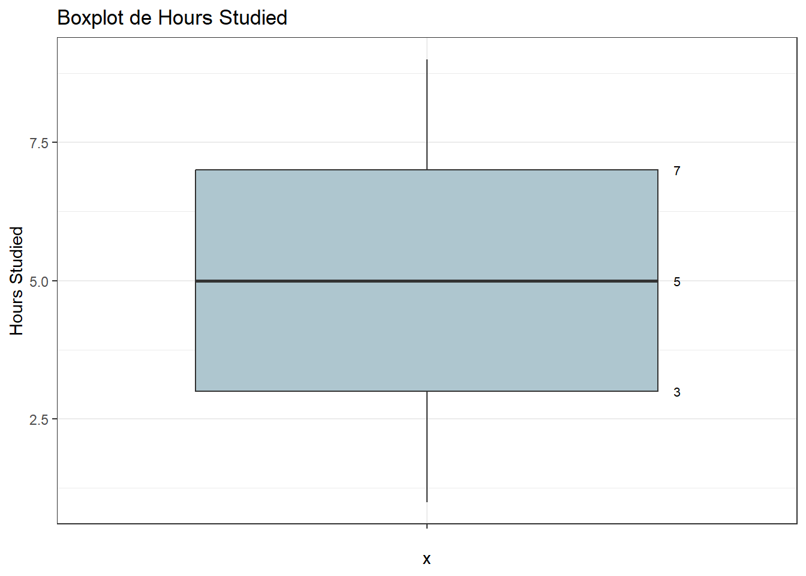
El boxplot confirma la ausencia de valores atípicos: los bigotes abarcan de 1 a 9 horas, la caja central va de 3 a 7 horas y la mediana se ubica exactamente en 5 horas, reflejando una distribución perfectamente equilibrada.
Variable Previous Scores:
ggplot(df, aes(x = `Previous Scores`)) +
geom_histogram(bins = 30, fill = "#AEC6CF", color = "white") + etiq_hist(bins = 30) +
labs(title = "Distribución de Previous Scores", x = "Previous Scores", y = "Frecuencia")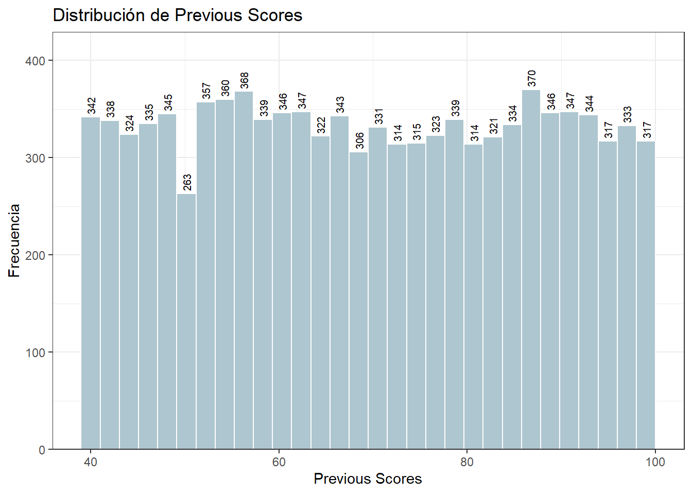
La distribución de Previous Scores se muestra uniforme a lo largo de todo su rango entre 40 y 99 puntos. Cada barra reúne entre 290 y 370 registros aproximadamente, lo que indica que las calificaciones previas de los estudiantes se reparten de manera homogénea sin concentrarse en un tramo específico.
ggplot(df, aes(x = "", y = `Previous Scores`)) +
geom_boxplot(fill = "#AEC6CF") + etiq_box() +
labs(title = "Boxplot de Previous Scores", y = "Previous Scores")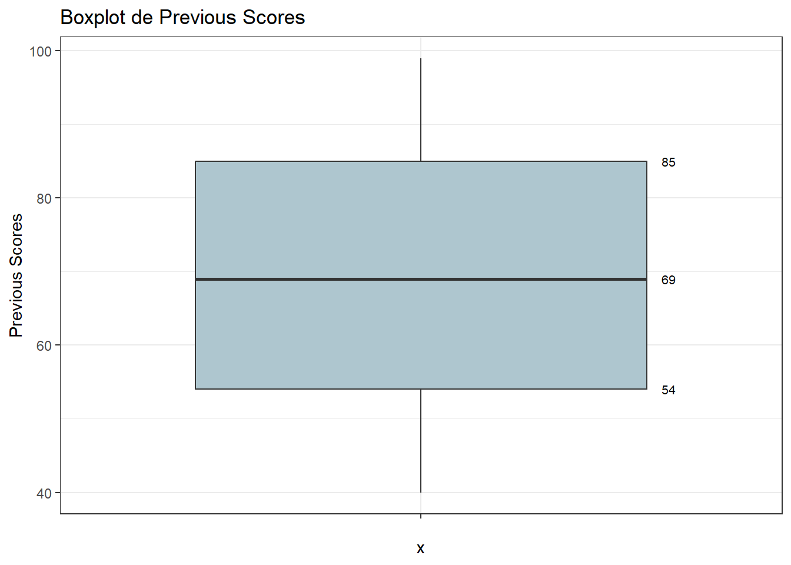
El boxplot de Previous Scores no presenta valores atípicos: los bigotes cubren de 40 a 99 puntos, la caja central abarca de 54 a 85 puntos y la mediana se sitúa en 69 puntos, corroborando la simetría de la variable.
Variable Sleep Hours:
ggplot(df, aes(x = `Sleep Hours`)) +
geom_histogram(binwidth = 1, boundary = 3.5, fill = "#AEC6CF", color = "white") +
etiq_hist(binwidth = 1, boundary = 3.5) +
scale_x_continuous(breaks = 4:9) +
labs(title = "Distribución de Sleep Hours", x = "Sleep Hours", y = "Frecuencia")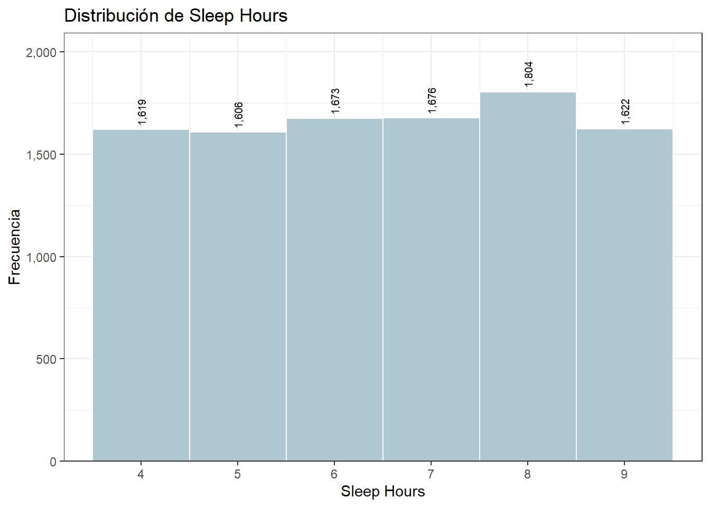
Las seis categorías enteras de Sleep Hours (de 4 a 9 horas) muestran frecuencias muy parejas, entre 1,606 y 1,804 estudiantes cada una. El valor de 8 horas presenta una frecuencia ligeramente superior (1,804 registros), pero en general los hábitos de descanso se reparten de manera uniforme.
ggplot(df, aes(x = "", y = `Sleep Hours`)) +
geom_boxplot(fill = "#AEC6CF") + etiq_box() +
labs(title = "Boxplot de Sleep Hours", y = "Sleep Hours")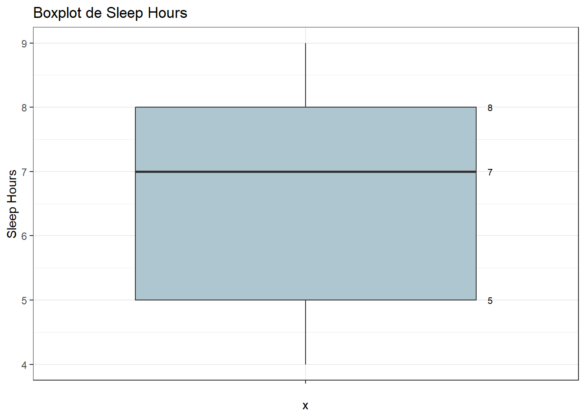
El boxplot de Sleep Hours no muestra valores atípicos: los bigotes van de 4 a 9 horas, el 50 % central de los estudiantes duerme entre 5 y 8 horas, y la mediana se ubica en 7 horas.
Variable Sample Question Papers Practiced:
ggplot(df, aes(x = `Sample Question Papers Practiced`)) +
geom_histogram(binwidth = 1, boundary = -0.5, fill = "#AEC6CF", color = "white") +
etiq_hist(binwidth = 1, boundary = -0.5) +
scale_x_continuous(breaks = 0:9) +
labs(title = "Distribución de Sample Question Papers Practiced",
x = "Sample Question Papers Practiced", y = "Frecuencia")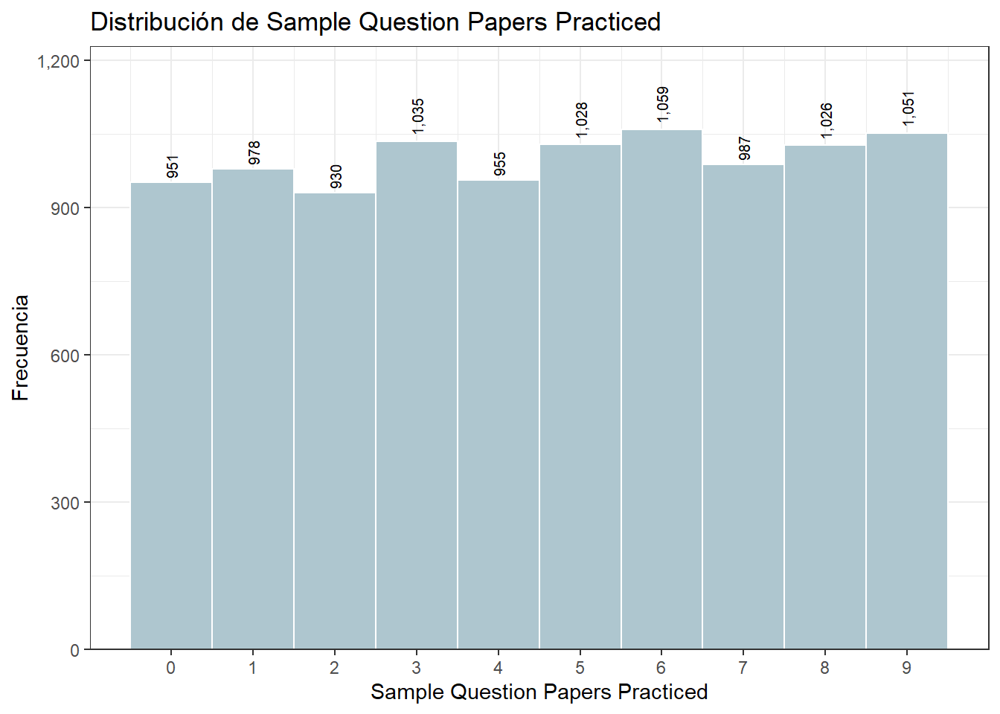
La distribución de Sample Question Papers Practiced es uniforme discreta entre 0 y 9 cuestionarios practicados, con frecuencias entre 930 y 1,059 estudiantes en cada nivel. No existe concentración en cero ni sesgo hacia valores altos.
ggplot(df, aes(x = "", y = `Sample Question Papers Practiced`)) +
geom_boxplot(fill = "#AEC6CF") + etiq_box() +
labs(title = "Boxplot de Sample Question Papers Practiced",
y = "Sample Question Papers Practiced")
El boxplot confirma que no hay valores atípicos: los bigotes cubren todo el rango de 0 a 9 cuestionarios, la caja va de 2 a 7 y la mediana se ubica en 5 cuestionarios practicados.
Continuaremos con la variable categórica del dataset.
Variable Extracurricular Activities:
ggplot(df, aes(x = `Extracurricular Activities`)) +
geom_bar(fill = "#AEC6CF") + etiq_barras() +
labs(title = "Distribución de Extracurricular Activities",
x = "Extracurricular Activities", y = "Frecuencia")
La proporción de estudiantes que participan y que no participan en actividades extracurriculares está prácticamente equilibrada: 5,052 estudiantes (50.52 %) responden “No” y 4,948 estudiantes (49.48 %) responden “Yes”. No existe desbalance entre categorías.
Una vez caracterizadas las variables de forma individual, se analiza cómo se relacionan con la variable respuesta, Performance Index, con el fin de identificar patrones visuales que luego serán contrastados formalmente.
Hours Studied vs Performance Index:
ggplot(df, aes(x = `Hours Studied`, y = `Performance Index`)) +
geom_point(color = "#5B7C99", alpha = 0.25, size = 1.2) +
scale_x_continuous(breaks = 1:9) +
labs(title = "Hours Studied vs Performance Index",
x = "Hours Studied", y = "Performance Index")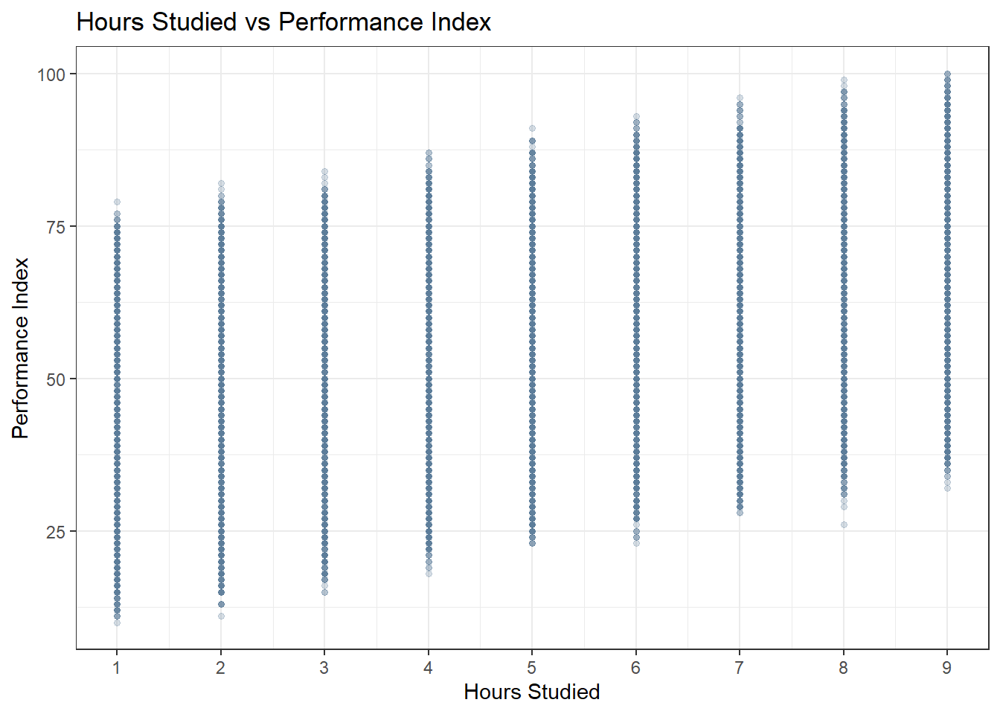
Se observa una tendencia ascendente clara: a medida que aumentan las horas de estudio de 1 a 9, toda la franja de valores de Performance Index se desplaza hacia arriba. Mientras que con 1 hora de estudio los índices se concentran aproximadamente entre 10 y 75 puntos, con 9 horas de estudio se ubican entre 35 y 100 puntos, evidenciando una relación positiva moderada.
Previous Scores vs Performance Index:
ggplot(df, aes(x = `Previous Scores`, y = `Performance Index`)) +
geom_point(color = "#5B7C99", alpha = 0.25, size = 1.2) +
labs(title = "Previous Scores vs Performance Index",
x = "Previous Scores", y = "Performance Index")
Se aprecia una relación lineal positiva muy marcada y estrecha entre Previous Scores y Performance Index. Los puntos forman una banda diagonal ascendente bien definida: los estudiantes con calificaciones previas cercanas a 40 obtienen índices alrededor de 10–40 puntos, mientras que quienes tienen calificaciones previas cercanas a 99 alcanzan índices entre 70 y 100 puntos. Esta variable se perfila visualmente como el predictor individual más fuerte del rendimiento académico.
Sleep Hours vs Performance Index:
ggplot(df, aes(x = `Sleep Hours`, y = `Performance Index`)) +
geom_point(color = "#5B7C99", alpha = 0.25, size = 1.2) +
scale_x_continuous(breaks = 4:9) +
labs(title = "Sleep Hours vs Performance Index",
x = "Sleep Hours", y = "Performance Index")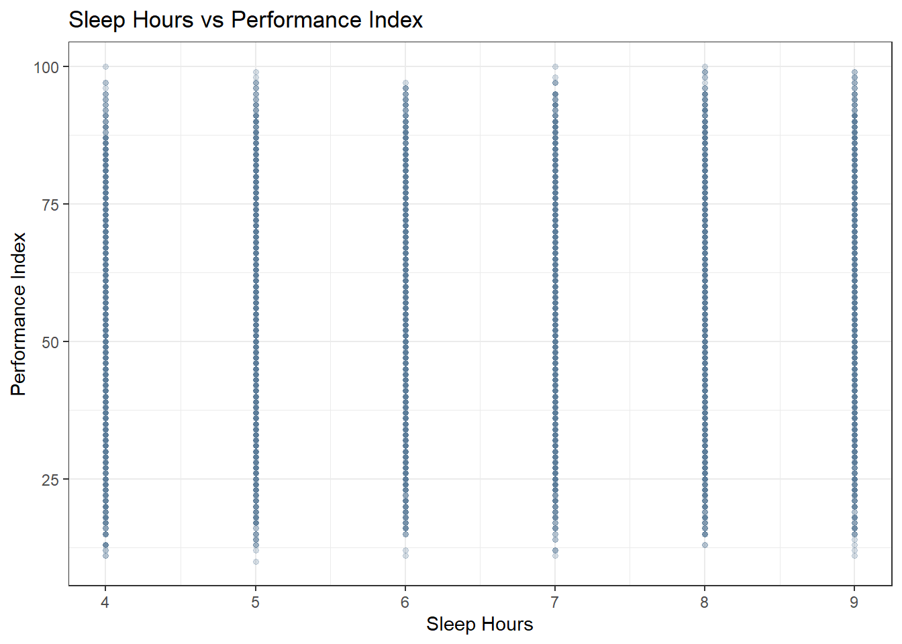
Para cada cantidad de horas de sueño (de 4 a 9), los valores de Performance Index cubren prácticamente el mismo rango (de 10 a 100 puntos) con una distribución vertical muy similar, sin que se distinga a simple vista una pendiente pronunciada.
Sample Question Papers Practiced vs Performance Index:
ggplot(df, aes(x = `Sample Question Papers Practiced`, y = `Performance Index`)) +
geom_point(color = "#5B7C99", alpha = 0.25, size = 1.2) +
scale_x_continuous(breaks = 0:9) +
labs(title = "Sample Question Papers Practiced vs Performance Index",
x = "Sample Question Papers Practiced", y = "Performance Index")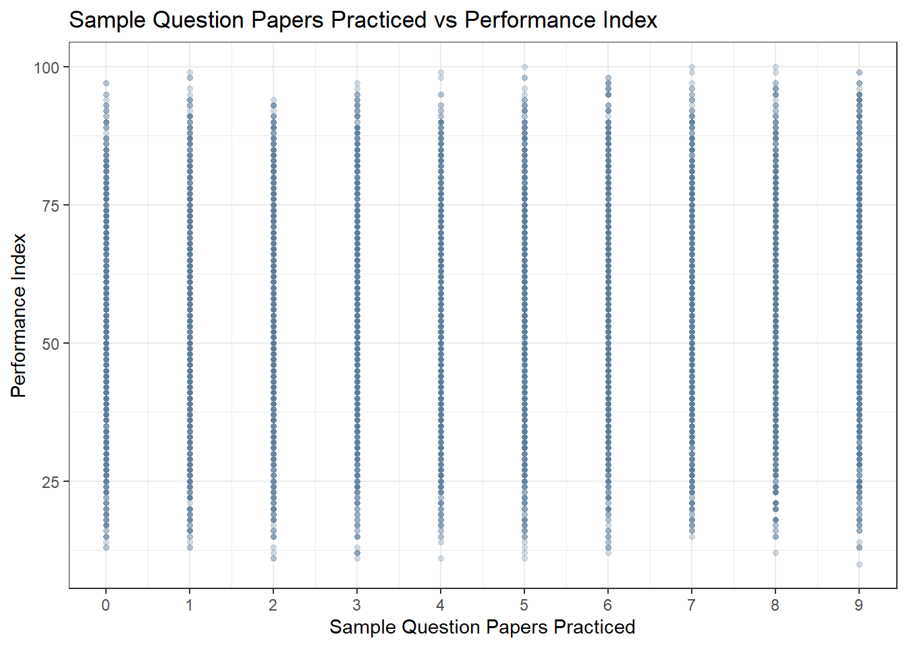
De manera similar a Sleep Hours, las diez columnas correspondientes a 0 hasta 9 cuestionarios practicados presentan rangos y densidades verticales muy parecidos en Performance Index, lo que sugiere que, analizada de forma aislada, esta variable muestra una asociación visualmente débil con el rendimiento.
Extracurricular Activities vs Performance Index:
ggplot(df, aes(x = `Extracurricular Activities`, y = `Performance Index`)) +
geom_boxplot(fill = "#AEC6CF") + etiq_box() +
labs(title = "Performance Index según Extracurricular Activities",
x = "Extracurricular Activities", y = "Performance Index")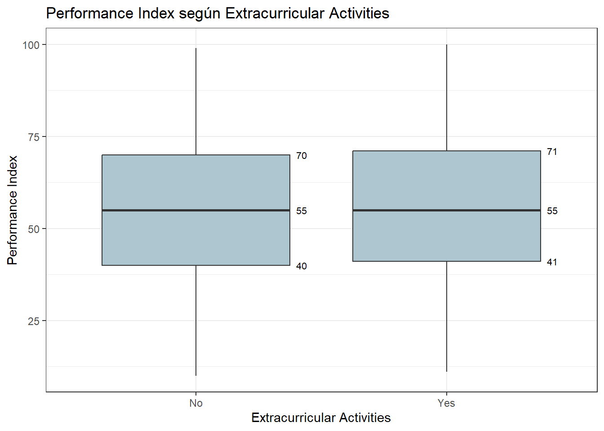
Los boxplots de ambos grupos lucen prácticamente idénticos: la mediana se sitúa en 55 puntos tanto para “No” como para “Yes”, mientras que los cuartiles apenas varían en 1 punto (de 40 a 70 en “No”, frente a 41 a 71 en “Yes”). Visualmente, la participación en actividades extracurriculares no produce una separación marcada en el rendimiento cuando se observa sin controlar por las demás variables.
Apéndice gráfico de asociaciones entre predictores
Se presenta la matriz de correlación y dispersión de las variables numéricas, calculada con los 10,000 registros. Como las variables no siguen una distribución normal, la correlación mostrada es la de Spearman.
df_num <- df %>% select(where(is.numeric))
dispersion_densidad <- function(data, mapping, ...) {
ggplot(data = data, mapping = mapping) +
geom_bin2d(bins = 30) +
scale_fill_gradient(low = "#D6E4EA", high = "#2C4A5E", guide = "none")
}
grafico_spearman <- GGally::ggpairs(
df_num,
upper = list(continuous = GGally::wrap("cor", method = "spearman",
title = "Spearman", stars = FALSE, size = 3.5)),
lower = list(continuous = dispersion_densidad),
diag = list(continuous = GGally::wrap("densityDiag", fill = "#AEC6CF")),
progress = FALSE
) +
theme(axis.text = element_text(size = 7), strip.text = element_text(size = 8))
suppressWarnings(suppressMessages(print(grafico_spearman)))
La matriz de correlación resume con claridad la estructura del dataset: por un lado, Performance Index presenta una correlación muy fuerte con Previous Scores (\(\rho_s = 0.921\)) y moderada con Hours Studied (\(\rho_s = 0.352\)), además de correlaciones muy bajas pero positivas con Sleep Hours (\(\rho_s = 0.045\)) y Sample Question Papers Practiced (\(\rho_s = 0.041\)). Por otro lado, entre las cuatro variables predictoras numéricas todos los coeficientes de correlación son prácticamente cero (\(|\rho_s| \le 0.017\)), lo que anticipa independencia entre regresores y ausencia de multicolinealidad.
A continuación se inspeccionan individualmente los 6 pares posibles entre las variables predictoras numéricas.
Hours Studied vs Previous Scores:
ggplot(df, aes(x = `Hours Studied`, y = `Previous Scores`)) +
geom_point(color = "#5B7C99", alpha = 0.25, size = 1.2) +
scale_x_continuous(breaks = 1:9) +
labs(title = "Hours Studied vs Previous Scores",
x = "Hours Studied", y = "Previous Scores")
Las nueve franjas verticales correspondientes a cada hora de estudio muestran una distribución uniforme de Previous Scores entre 40 y 99 puntos, sin tendencia ascendente ni descendente (\(\rho_s = -0.0125\)).
Hours Studied vs Sleep Hours:
ggplot(df, aes(x = `Hours Studied`, y = `Sleep Hours`)) +
geom_point(color = "#5B7C99", alpha = 0.25, size = 1.2) +
scale_x_continuous(breaks = 1:9) +
scale_y_continuous(breaks = 4:9) +
labs(title = "Hours Studied vs Sleep Hours",
x = "Hours Studied", y = "Sleep Hours")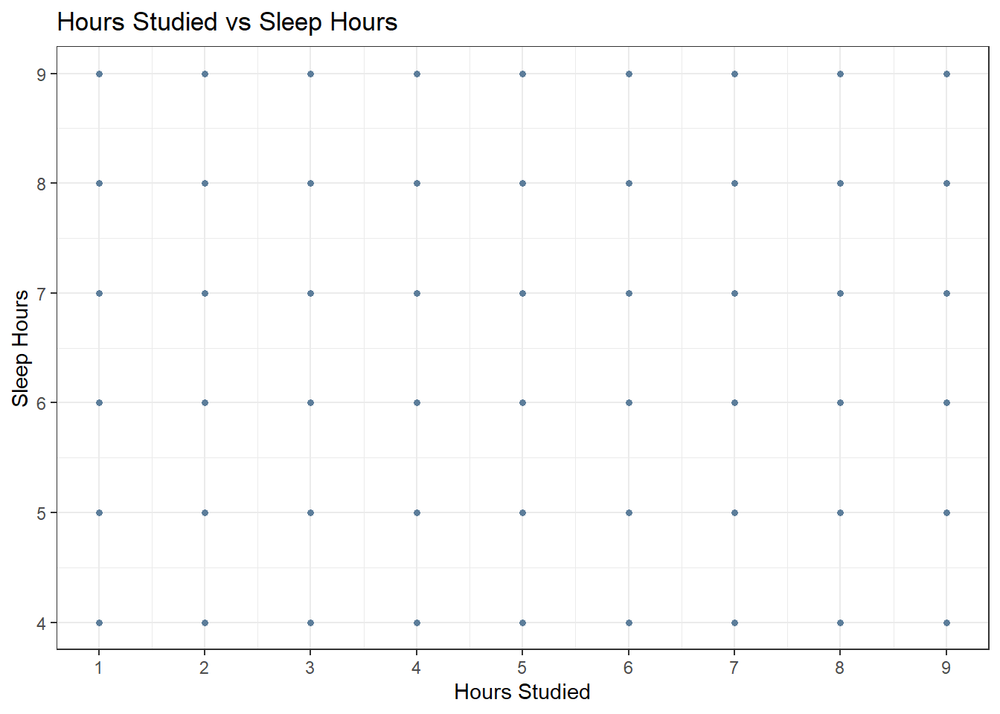
Se observa una cuadrícula uniforme de \(9 \times 6\) combinaciones enteras, lo que indica que las horas de estudio y las horas de sueño son independientes entre sí (\(\rho_s = 0.0012\)).
Hours Studied vs Sample Question Papers Practiced:
ggplot(df, aes(x = `Hours Studied`, y = `Sample Question Papers Practiced`)) +
geom_point(color = "#5B7C99", alpha = 0.25, size = 1.2) +
scale_x_continuous(breaks = 1:9) +
scale_y_continuous(breaks = 0:9) +
labs(title = "Hours Studied vs Sample Question Papers Practiced",
x = "Hours Studied", y = "Sample Question Papers Practiced")
Nuevamente se forma una cuadrícula uniforme de \(9 \times 10\) puntos sin concentración en ninguna diagonal (\(\rho_s = 0.0173\)), confirmando ausencia de asociación entre ambas variables.
Previous Scores vs Sleep Hours:
ggplot(df, aes(x = `Previous Scores`, y = `Sleep Hours`)) +
geom_point(color = "#5B7C99", alpha = 0.25, size = 1.2) +
scale_y_continuous(breaks = 4:9) +
labs(title = "Previous Scores vs Sleep Hours",
x = "Previous Scores", y = "Sleep Hours")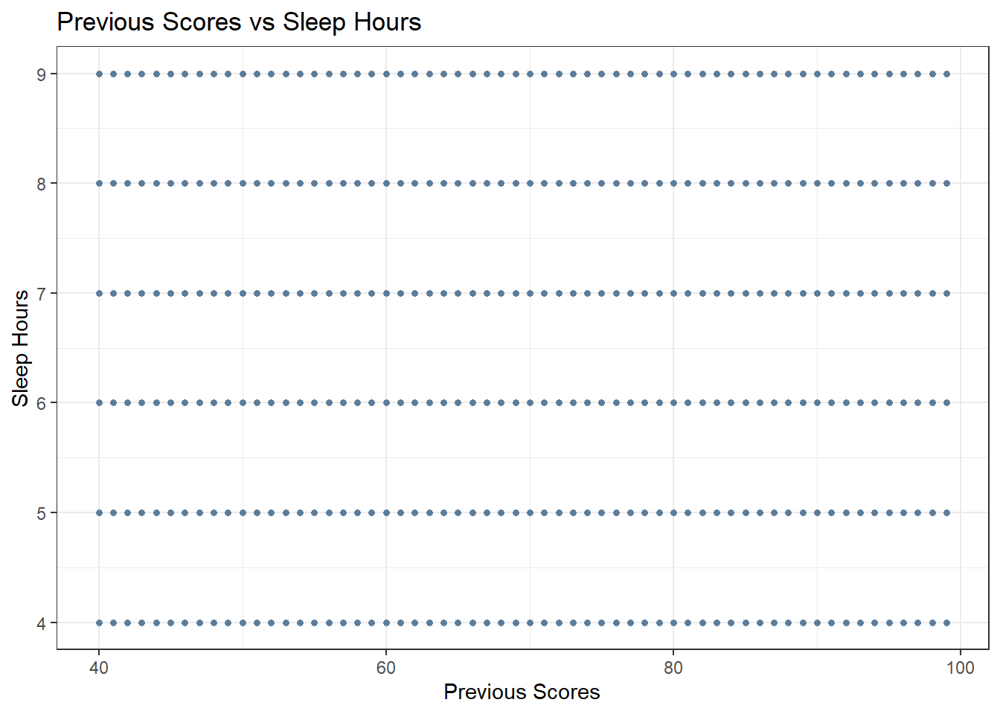
Se distinguen seis líneas horizontales bien definidas (de 4 a 9 horas de sueño) a lo largo de todo el rango de Previous Scores (40 a 99), sin ningún patrón de dependencia (\(\rho_s = 0.0060\)).
Previous Scores vs Sample Question Papers Practiced:
ggplot(df, aes(x = `Previous Scores`, y = `Sample Question Papers Practiced`)) +
geom_point(color = "#5B7C99", alpha = 0.25, size = 1.2) +
scale_y_continuous(breaks = 0:9) +
labs(title = "Previous Scores vs Sample Question Papers Practiced",
x = "Previous Scores", y = "Sample Question Papers Practiced")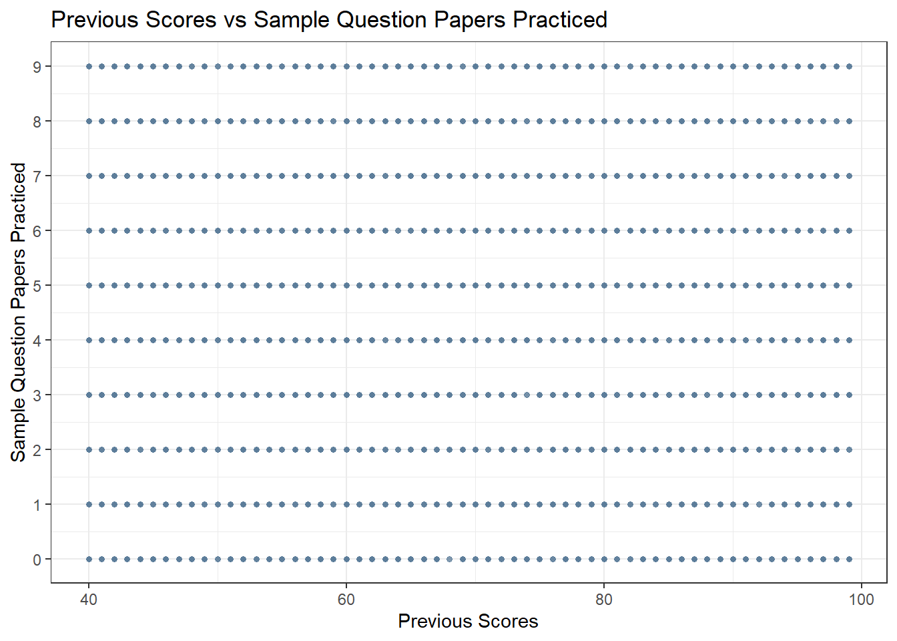
Las diez líneas horizontales correspondientes a 0 hasta 9 cuestionarios practicados se extienden de forma homogénea a lo largo de todo el rango de calificaciones previas (\(\rho_s = 0.0079\)).
Sleep Hours vs Sample Question Papers Practiced:
ggplot(df, aes(x = `Sleep Hours`, y = `Sample Question Papers Practiced`)) +
geom_point(color = "#5B7C99", alpha = 0.25, size = 1.2) +
scale_x_continuous(breaks = 4:9) +
scale_y_continuous(breaks = 0:9) +
labs(title = "Sleep Hours vs Sample Question Papers Practiced",
x = "Sleep Hours", y = "Sample Question Papers Practiced")
Se observa una cuadrícula discreta uniforme de \(6 \times 10\) combinaciones sin ningún patrón de asociación (\(\rho_s = 0.0041\)).
En conjunto, el análisis bivariado entre regresores confirma que las cuatro variables numéricas predictoras son prácticamente independientes entre sí, descartando redundancias entre ellas.